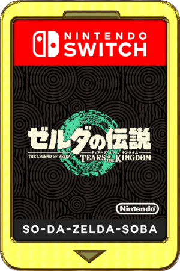

How to make your own icons¶
This Guide was written originally on GBATemp I'm adding this here for prosperity.
This write up is something to help people make their own
game covers using freely available assets from the net and everywhere and anywhere.
this guide is mainly going to involve switch games but it can easily apply to ANY game within reason
you can grab the biggest assets and images with ease, here is a small example:

technically you do not have to keep assets once you are done,
but believe me when I say if you catch a game early enough you may find assets
that you may never see again without some luck using the wayback machine.
Still don't believe me?
Here's a quick test for you:¶
The Game is RXN: RXN -Raijin- or RXN -雷神-
this game was delisted the developer was Gulti and the publisher was KAYAC Inc
with EastAsiaSoft releasing a limited physical version in the asian market
try and find the logo that's 727 x 623 & transparent using regular search engine results.
Tutorial 1¶
Getting assets from dev sites¶
in this example I'm going to explain how you can use a games website to grab assets for making a cover.
I've written this guide using a chromium based browser so things may slightly differ
but I hope this is a catch all quick and dirty tutorial.
when you visit the site of choice in your browser click the menu icon Menu
select more tools > Developer tools alternatively use the keyboard shortcut by pressing Ctrl+Shift+I
in the developer window Click on Network then click on Img and reload the webpage F5 or Ctrl+R
when you the page reloads you will see a load of various images choose the images you want to use and save them in this example I grabbed the brick texture tile and Save image as...
you can also get images from press kits which usually contain promotional material which can vary between developers,
some contain PDFs and wallpapers
others may include full sized individual assets or PSDs with adjustable layers.
Not all developers have press kits and some use a templated press kit site or require you to signup
Example¶
so using the press kit & the tiles background from the game site you can see I have made a very quick and alternative cover
600px x 900px
I tend to save versions rather directly mess with included psds
this was the final result of the quick edit made.
this is just a very basic method, sometimes you may have to make your own assets
this is why the largest images you can find are better for cutting out etc.
Tutorial 2¶
xbox website¶
If you are just after a vertical cover you might have luck using the xbox website
in the example below you can see the cover we are going to grab but it's quite small on the website I'll show you how to get the bigger image
Right Button the image and Open Image in new tab
after you open the new image you will notice the URL is very long
in this example I'll be remove the everything after the ?
?q=90&w=177&h=265 this is basically the quality, width & height
after removing that text press enter and voila the full size image

Right Button and save the image
simply rename the file <yourchoice>.jpg in this example i used xbox.jpg
it's important to include .jpg file extension otherwise the image will have a long extension like the one in the image above
and there is the full sized image from website 720px x 1080px at the best quality it hosts
which is perfectly 2:3 ratio
playstation website¶
the same can be done with playstation's store front but I tend to use it less
so similar to tutorial 1 above I'm using developer tools again
click the context menu icon (3 lines) Menu
select More tools > Developer tools or press Ctrl+Shift+I
but unlike the first example you will need to Open image in new tab
as with the xbox site, playstation also use resizing via the URL simply remove the text after ? again
even if the image shows as a jpg in the url for me they save as webp but most new image programs open them such as gimp or even paint
alternatively you could grab the whole URL leaving out ? and make a hyperlink in a html file and save target as
other sites¶
other sites such as SteamDB you can grab the portrait image
simply click information and under library_assets you can usually find logo's here also.
SteamgridDB also has the same api access and you can view the original assets by clicking on any game and pressing the View Original Steam Assets button near the top
obviously steamgridDB is a very awesome site for game covers but they don't include every game and you may find they don't have a listing but you can help them by making artwork and request a listing Request a Game
I have done this in the past for Azure Striker Gunvolt 3 (2022)
Tutorial 3¶
Thinking outside the box¶
Sometimes if you think outside of the box you might find images that just aren't super easy to find.
searching for images from just one search engine isn't always going to get images.
Search engine !bangs¶
I tend to start with duckduckgo (ddg) because it has shortcuts using bangs
What are bangs?
Bangs are shortcuts that quickly take you to search results on other sites.
I believe brave search uses the same !bang system
For example I'm looking for "Xenoblade Chronicles 3" and aren't getting good results
I may try to search google by using a !bang search from duckduckgo
"!g Xenoblade Chronicles 3" would search google.com
"!b Xenoblade Chronicles 3" would search bing.com
"!gj Xenoblade Chronicles 3" would search google.co.jp japan
it's a neat method for speeding up searches
Wikipedia & Translations¶
if you check ikipedia you can find external references in the notes which may include useful sites with differing assets and sometimes the Japanese name or other region names, for instance:
Known in Japan as Xenoblade 3 (Japanese: ゼノブレイド3, Hepburn: Zenobureido Surī)
or you can use a translator website such as google translate or DeepL.
because ddg is my main search engine "!gj ゼノブレイド3" would search google jp.
this doesn't guarantee anything but it improves the chances.
Example¶
often nintendo jp has way better websites with excellent assets over other nintendo
sites but you may find different regions have different assets for a particular game
as you can see the US site has a bigger version of the background
if a website has a mobile version it may use different assets, you can easily switch to the mobile version by changing the site canvas using the device toggle switch in developer tools
click the context menu icon Menu
select more tools > Developer tools or press Ctrl+Shift+I
then once the DevTools window is open
Click the Toggle device toolbar icon or press Ctrl+Shift+M
once you toggle reload ( F5 or Ctrl+R ) the page and you may notice different assets have loaded
if you click the Dimensions Dropdown list and select a tablet device to emulate you may get another set of different icons
this is down to the web developer/website if they have done this and isn't always done, it's usually a single asset set for each canvas.
Recommendations¶
sometimes you can find assets or promotional material on
- Developers sites
- Publishers websites
- Twitter (Can sometimes Yeild images from developers or artists)
- Artstation (might have portolio work from very talanted artists working on the game)
- 4gamer can have large assets (Japanese gaming site)
- If you are looking for older games you can try looking for press kit archives, thanks to ChaoticPumpkin for bringing it up
try changing aspect ratios adding press kit (プレスキット), key art (キーアート) or the game directors name or lead artists...
google hides some settings for searching images but advanced search is better
tineye is ok for reverse image searching especially if you find a heavily watermaked image but you don't always get results
think outside the box to make the box cover you want
Tutorial 4¶
Making icons¶
Now lets use everything we have learned and make a cover that will work with a vertical switch theme
I'm going to use the 600px wide promotional art, because I tend to use steamgriddb quite a bit
I've gotten into the habit of making 600x900 images and the 2:3 ratio is the exact size my verical theme uses
so I made a 600 x 900 image and dropped / imported the promotional image into my canvas and adjusted it to my liking.
well would you look at that nice and simple but the switch won't be able to open this so we have to do some tweaks
Saving¶
Saving the image as a jpg making sure it's not saved progressive or optimized, I'm making sure not to save the proportions
as we need a 256x256 image
as you can see the jpg is 88.2K with the switch you need to keep the image below 128K so the target I aim for is 120k
believe it or not removing the metadata can save valuable space and keep the image at a higher quality.
Searching for TitleID¶
if you need the TitleID you can use TitleDB lookup by slluxx or tinfoil.io
Example¶
Here are just some very quick covers i made using some of the techniques above
how about the new zelda game?
what about a japanese version?
oh I've not seen the cart yet have you? it might look like this:

maybe they will release a special edition gold cart?
perhaps atmosphere will come out on cart?
there is no limit to what can be done...